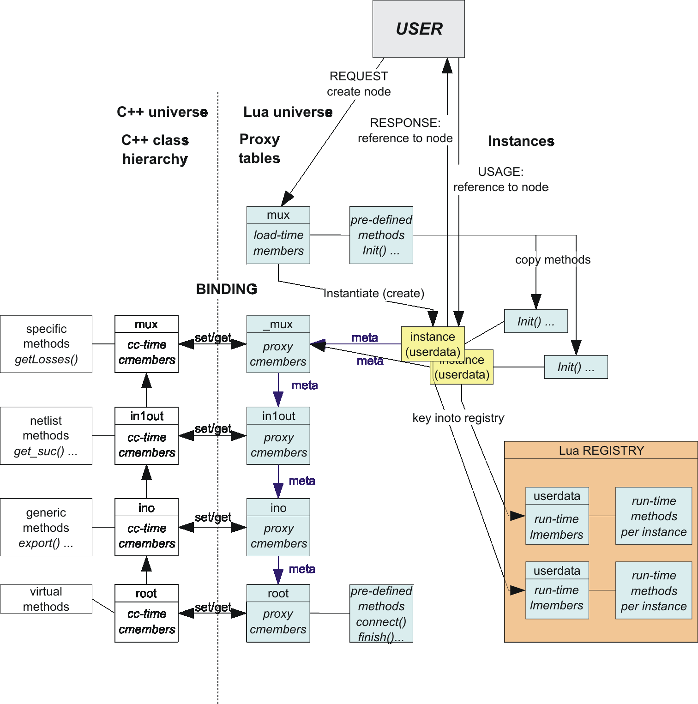

Simulation Kernel
The Luayats simulation environment consists of the following core components:- Simulator object yats.sim with the calendar queue
- Network objects, that implement the actual functionality by sending and receiving data items from other objects and scheduling events into the calendar queue.
- Connection management to connect the network objects to a network
- Data handling for sending and receiving data items.
Simulation Phases
A simulation runs in three phases- Declaration phase: Initialization of simulator and instantiation of network objects
- Connection phase: Connects network objects to a consistent netlist
- Execution phase: Runs the simulation by scheduling events and data item exchange between network objects.
Calendar Queue
Central part of the simulation kernel is the calendar queue, which operates on events created and scheduled by network objects. Events are queued in the calendar queue according to their scheduled due time using the methods alarme(event, time) or eache(event, time)
alarml(event, time) or eachl(event, time).
Once the internal timeslot counter reaches the scheduling time of an event, the event fires: single shot events are removed from the calendar, cyclic events are automatically re-scheduled before the event handler is called.and one of the following net objects methods is called.
early(event) or
late(event).
A single shot event can also be manually re-scheduled in the event handler to become a cyclical event.
The timeslot counter advances when all events have been processed.
Luayats splits a timetick into 2 different phases:
- The EARLY phase is the phase where net objects transfer data
- The LATE phase is the phase where houskeeping function are executed, e.g. scheduling algorithms.
Corresponding to the timeslot phases, events scheduled with alarme(event, time) fire in the EARLY timeslot phase and events scheduled with alarml(event, time) fire in the LATE timeslot phase.
Network Objects
Network objects are instances of network classes. Each network object implements at least the following mandatory methods:| early(event) | Called by the calendar queue when an early event fires |
| late(event) | Called by the calendar queue when a late event fires |
| handle(inputname, successor) | Called by an network object during connect() to establish the connection to it's successor. The function returns a handle to be used during sending data items with rec(data, handle) |
| connect() | Called by the simulation kernel for all network objects during the connection phase. |
| rec(data, ihandle) | Called by a network object to send data to it's successor |
Normally network objects are dynamically instantiated via Lua in the simulation control script. All network classes are automatically made visible to Lua during compilation using the tool tolua++.
Class Hierarchy
Luayats
has a built-in scheme for object oriented programming. Each
network object class has a C++ and a Lua representative.
The Hierarchy and the relation between the C++ universe and the Lua universe is shown in the figure below.

The scheme provides the following features:
- Methods and members of the C++ objects are visible to Lua scripts
- Lua scripts can override C++ methods and members
- Lua scripts can extend objects with members and methods both at during class declaration and during runtime.
- Lua scripts have full access to both, the Lua and the C++ inheritance chain.
- The user can declare new network objects in Lua using either a Lua or a C++ defined class as base class. This is especially useful for rapid prototyping of new network models without the need to compile.
During class definition using newclass = class(baseclass) the original proxy table created by tolua++ is renamed and a new class is defined using the original one as base class. In order to simplify object initialization most of the constructor work is done using Lua in the constructor function init(params) of the new class. When a class instance (object) is created the methods of the base class are copied into the newly created object.
The C++ object is created as userdata. which is stored in the Lua registry and set as metatable for the new proxy table.
The class hierarchy is as follows:
_BASE
- This is the immediate base class (old proxy class) created by tolua++.
- root
- Builds the lowest level in the class hierarchy and provides basically virtual methods. The class is extended with additional methods.
- ino
- Provides generic methods to each network object, also called node.
in1out, inxout
- Base class for network object with multiple inputs and one or multiple outputs
The C++ constructor typically restricts it's work to the absolute minimum and to those initializations, that cannot be performed in Lua. Most of the initialization is performed by the Lua constructor function CLASS.init(param), which receives a parameter table with named parameters, which can be defined in arbitrary order.
The Lua constructor also defines the objects inputs and output and registers events with the simulation calendar, if required. It finally calls the Lua function self:finish(), which finalizes the object construction by calling the C++ baseclass's member function act().
Network objects are automatically deleted via Lua garbage collection. The C++ destructor is called automatically when the Lua object is collected.
However, Luayats does not collect network objects directly when the simulation end. The objects are collected temporarily in hidden table for post mortem debugging purposes.
Data Objects
Luayats provides a couple of data item classes. Data items are crated, sent and deleted between network objects. The creation often occurs in sources while the deletion occurs in the sink network object.
The most important data types are
- cell
- ATM cell for direct usage or as base class for other datatypes.
frame
- Generic frame, which has a number of different frame discriminators.
There exist also a number of derived data item types. See src/kernel/data.h for more details.
Data objects are not actually deleted upon their deconstruction. The are merely stored in pools for later reuse. This speeds up the allocation of data items a lot. The pool grows as allocation of data items grow. It never shrinks. This mechanism is implemented by overloading the data types new and delete methods.
NOTE:
When using Lua defined network objects, there exists a possible race condition in conjunction with the interworking between the C++ and the Lua universe. Generally a data item created via Lua is subject to Lua's garbage collection. If the data item has been sent into a queue residing in the C++ universe it is invisible to Lua and Lua may collect this object.
It is therefore recommended to keep a reference to such items within the Lua universe until the item is not needed any longer in order to avoid the data item to be collected by Lua.
Creating Network Object Classes
Creating net objects with C++
This is the standard way to create high performance network object classes. The following steps are required:
- Define the network object class in a header file
- Define the required minimum set of methods, like rec(), early(), late() and so on.
- Mark the methods and members to be wrapped to Lua using the //tolua_begin //tolua_end and //tolua_export directives.
- Include the header file into the file src/lua/yats.pkg
- Write the Lua defined base class which implements the Lua constructor init(params)
- Compile Luayats
Most of the standard Luayats network object classes are defined in this way.
Creating net objects with Lua
For rapid prototyping it is convenient and often sufficient from a speed point of view to invent new network object classes without any C++ knowledge and recompilation. Follow the following steps:
- Define a Lua define base class using lua1out or luaxout
- These classes are predefined and can be used like any other C++ base class. They are the Lua equivalent to in1out and inxout for C++ based network object classes.
- Define the required methods luarec(), luaearly() and lualate()
The Lua defined net object class can be used like any other network object class. It performs a lot slower because event handlers and data receiving function are implemented in Lua. However, depending on what you want to simulate, Lua's high performance allows you do valuable simulations using this method.
See the file yats/dummy.lua for an example.
Assembling Network Object Classes
Luayats provides ways to build new network object classes from already availabe classes.
Assembling net objects with C++
It is possible to use already avalable C++ network object classes within the definition of a new one. Since this method of assembling new classes is very flexible, no generic rules can be given here. However , the class ethbridge is an example, which defines new functionality for ethernet frame classification and forwarding and uses the already available frame base priority multiplexer muxFrmPrio for it's output queuing. The multiplexers are instantiated in the Lua level constructor ethbridge:init(params).
Two additional steps have to be undertaken:
- Since we use embedded multiplexers at the outputs, we have to ensure that their connect() function is called to establish a proper netlist for Luayats. This is done by overloading the network object's (here ethbridge) connect function and call the corresponding connect() functions of the multiplexers. At the inputs the handle() function of the ethbridge class is used.
- Ensure internal connectivity by calling the multiplexers rec() function directly from an ethbridge method, here: ethbridge:rec().
Assembling net objects with Lua block structure
Luayats provides a generic mechanism to construct block structures using available network object classes without touching C++ code.
There is a generic net object class block that acts as a container for arbitrary subnetlists, even in multiple levels. The class block has the same methods as the class root to help in network object class definition.
See the file yats/switch.lua for examples.
Connecting Instances
Instances of network object classes need to be connected. During node instantiation the successor nodes and their inputs are given as parameter out using the successor node's name (text) and it's input pin names. Luayats resolves the netlist automatically by calling the connect() method of all defined network objects. This is done in the Lua control script via sim:connect(). The objects will then call their successors handle() method to receive a handle for the corresponding input of the successor. This handle is then used when sending data items to a successor node.
Luayats detects unconnected pins and raises an appropriate error.